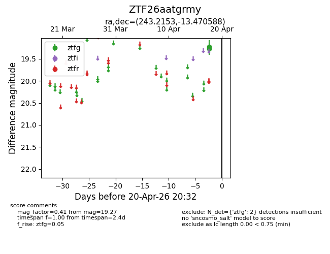
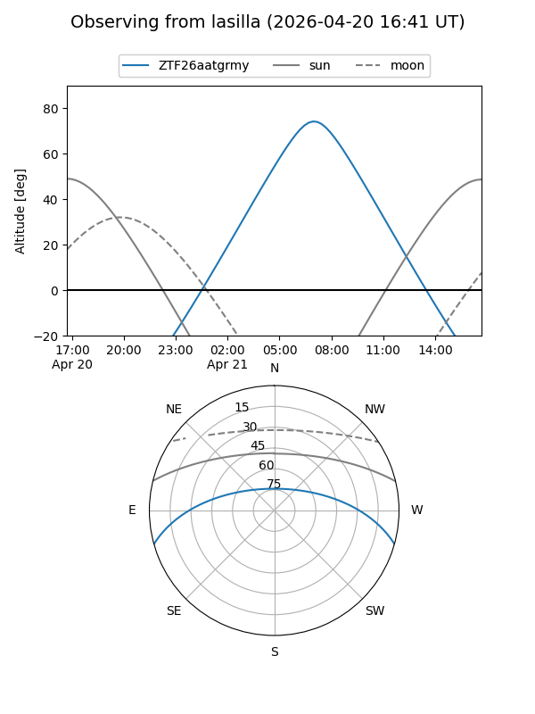
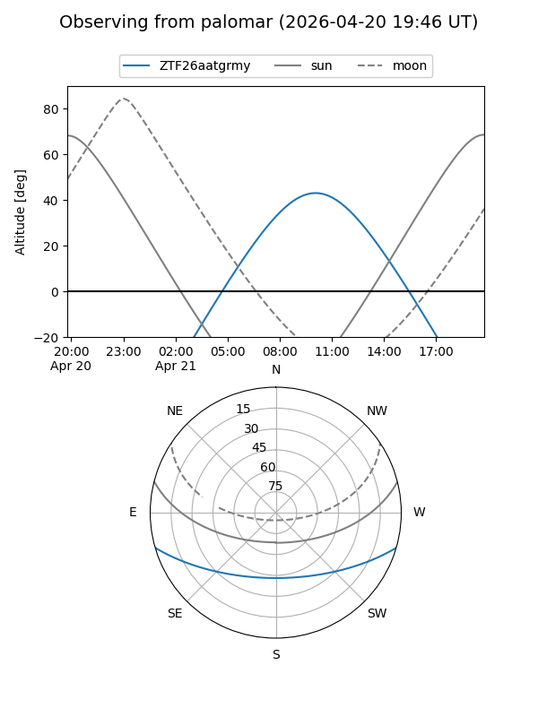

ZTF26aatgrmy
Target ZTF26aatgrmy at 2026-04-20 20:42
Aliases and brokers:
FINK: link
Lasair: link
ALeRCE: link
alt names
ZTF26aatgrmy (ztf,fink_ztf)
Coordinates:
equatorial (ra, dec) = 243.2153,-13.47059
equatorial (HMS+DMS) = 16:12:51.67,-13:28:14.12
galactic (l, b) = (359.7204,+26.48653)
Flags:
Photometry:
last ztfg=19.27
2 ztfg detections
Lightcurve

Visibility


Additional plots